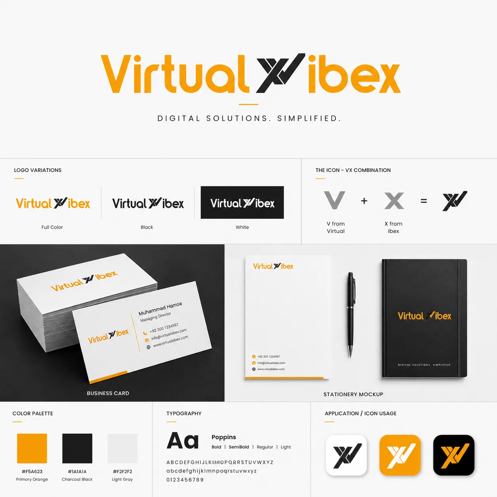
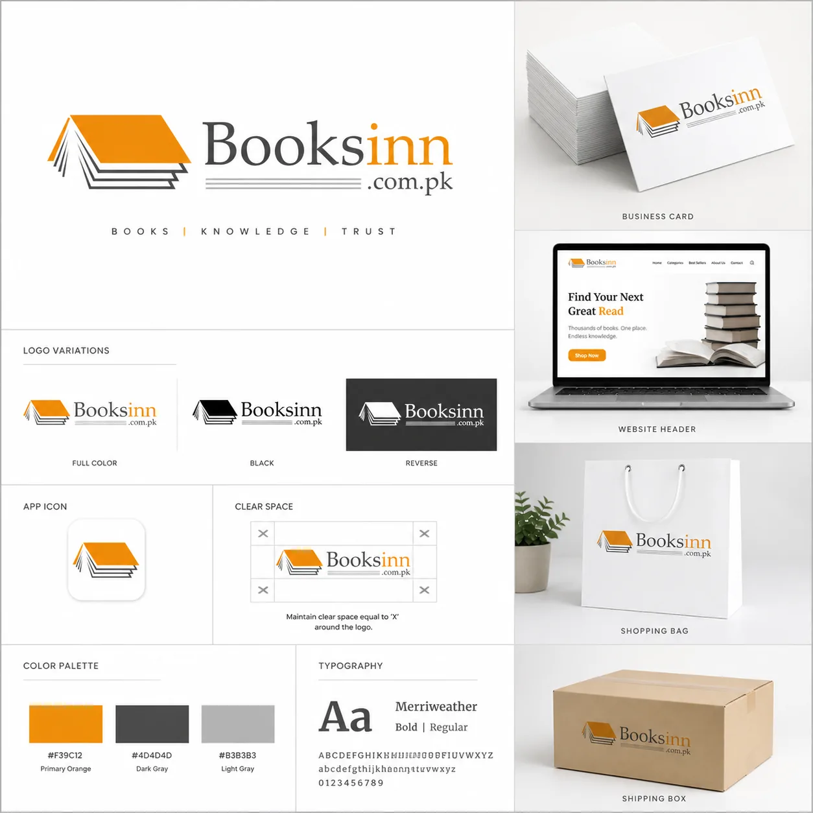
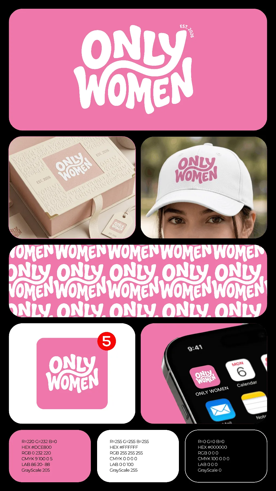

Brand identity
Logo Folio
A curated selection of logo and brand-identity directions, presented to show concept range and visual-system thinking.
01 / Overview
A collection of distinct identity directions.
The logo folio is presented as a curated identity collection rather than a single-client case study. Each project explores a different visual personality, while the presentation itself stays clean enough for the mark, typography and supporting system to be judged.
Logo concepts
Marks and identity directions across different brand categories.
Identity framing
Mockups and supporting applications give each logo a practical context.
5 identity boards
Five selected identity presentations are included.
02 / Selected identities
Logo folio



03 / Outcome & value
Concept range.
The folio shows range across different visual personalities while keeping each identity presentation clear, structured and practical.